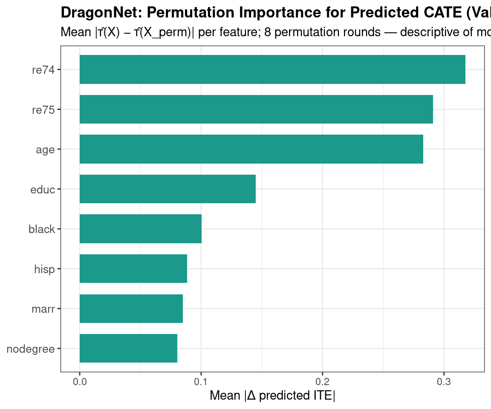

Code
packages <- c(
"tidyverse",
"plyr",
"RCausalML",
"causaldata",
"torch",
"ForCausality",
"mlbench",
"xgboost",
"future"
)

DragonNet was introduced by Shi, Blei & Veitch (2019) in “Adapting Neural Networks for the Estimation of Treatment Effects.” It addresses a fundamental weakness in both TARNet and CFRNet: neither uses propensity score information to guide the representation learning.
DragonNet is a deep learning architecture that explicitly incorporates propensity score estimation into the training process. It consists of a shared representation layer followed by three separate heads: one for predicting the propensity score and two for predicting potential outcomes under treatment and control. The key innovation is a targeted regularization term derived from the theory of targeted maximum likelihood estimation (TMLE), which encourages the model to learn representations that are sufficient for causal estimation. The result is a model that can achieve doubly-robust ATE estimation — meaning that even if either the outcome model or the propensity model is misspecified, the ATE estimate remains consistent.
The shared representation Φ(x) feeds into three heads:

The propensity score e(x) = P(T=1 | X=x) is the probability that a unit receives treatment, given its covariates. It is the fundamental tool in classical causal inference for de-confounding observational data.
The key theoretical result behind DragonNet comes from the sufficient representation theorem (Shi et al., 2019):
If a representation Φ(x) is sufficient for predicting the propensity score, it is also sufficient for estimating any causal quantity.
In plain terms: you don’t need to capture all of X — you only need to capture the parts of X that are relevant to treatment assignment. Any other variation in X is irrelevant noise for causal estimation and can be discarded. This is a much more targeted form of dimension reduction than TARNet or CFRNet apply.
Step 1 — Shared backbone. All patients are passed through the shared deep network Φ(x), producing a learned representation. This is structurally identical to TARNet’s shared layer, but the training signal it receives is fundamentally different.
Step 2 — Three-headed output. The representation feeds three separate heads simultaneously: - \(g(\Phi(x))\) — the propensity head, which outputs a sigmoid probability \(\hat{e}(x) = \hat{P}(T=1 \mid x)\). This is a binary classifier trained on treatment assignment. - \(Q_0(\Phi(x))\) — the control outcome head - \(Q_1(\Phi(x))\) — the treated outcome head
Step 3 — Targeted regularization. This is DragonNet’s unique contribution. Rather than just adding a propensity prediction loss on top, DragonNet applies a targeted regularization term derived from the theory of targeted maximum likelihood estimation (TMLE). The regularizer nudges the outcome predictions \(Q_0\) and \(Q_1\) toward being doubly robust — meaning that even if either the outcome model or the propensity model is slightly wrong, the final ATE estimate remains consistent.
Step 4 — Joint backpropagation. The combined loss flows back through all three heads and through the shared backbone simultaneously. Because the propensity head and the outcome heads share Φ, the backbone is forced to learn features that are predictive of both treatment assignment and outcomes — and the targeted regularizer ensures these features align with what is causally necessary.
Step 5 — ITE at inference. \(\text{ITE}(x) = \hat{Q}_1(\Phi(x)) - \hat{Q}_0(\Phi(x))\). The propensity head is discarded — it was only needed during training to shape the representation.
The targeted regularization is the most mathematically novel part. Here is what it computes:

The targeted regularization term is derived from the doubly-robust (DR) ATE estimator:
\[\widehat{\text{DR-ATE}} = \mathbb{E}\!\left[\hat{Q}_1 - \hat{Q}_0 + \frac{T(Y - \hat{Q}_1)}{\hat{e}(x)} - \frac{(1-T)(Y - \hat{Q}_0)}{1 - \hat{e}(x)}\right]\]
The two correction terms — the IPW-weighted residuals — penalize the network when its outcome predictions are inconsistent with the propensity score. When these residuals are zero, the model has achieved double robustness. The targeted regularization adds this quantity to the training loss with a small weight, gently steering the backbone toward representations where this consistency holds.
| TARNet | CFRNet | DragonNet | |
|---|---|---|---|
| Shared representation | Yes | Yes | Yes |
| Separate outcome heads | Yes | Yes | Yes |
| Distribution alignment (IPM) | No | Yes | No |
| Propensity score head | No | No | Yes |
| Targeted regularization | No | No | Yes |
| Doubly-robust ATE | No | No | Yes |
| Extra hyperparameters | — | \(\lambda\) | \(\alpha\) (propensity weight) |
| Theoretical basis | Generalization bounds | IPM bounds | Sufficient representation + TMLE |
The key practical advantage DragonNet has over CFRNet is that it doesn’t need to flatten the entire representation distribution — it only forces the representation to capture propensity-relevant information, which is a much more surgical and theoretically justified constraint. On benchmarks like IHDP and Jobs, DragonNet consistently matches or outperforms CFRNet, especially in low-data regimes where over-regularization from the IPM can hurt.
We fit DragonNet with RCausalML::dragonnet() (R/causalDeepNet.R), which uses torch when available (Adam then SGD, shared trunk, three heads, targeted regularization). We use the same real-world dataset as in the TARNet/CFRNet tutorial (NSW/Lalonde from causaldata) for consistency.
Following R packages are required to run this notebook. If any of these packages are not installed, you can install them using the code below:
tidyverse, plyr, RCausalML, causaldata, torch, ForCausality, mlbench, xgboost, future
packages <- c(
"tidyverse",
"plyr",
"RCausalML",
"causaldata",
"torch",
"ForCausality",
"mlbench",
"xgboost",
"future"
)# Install missing packages
# new_packages <- packages[!(packages %in% installed.packages()[, "Package"])]
# if (length(new_packages)) install.packages(new_packages)# Load packages with suppressed messages
invisible(lapply(packages, function(pkg) {
suppressPackageStartupMessages(library(pkg, character.only = TRUE))
}))# Check loaded packages
cat("Successfully loaded packages:\n")Successfully loaded packages: [1] "package:future" "package:xgboost" "package:mlbench"
[4] "package:ForCausality" "package:torch" "package:causaldata"
[7] "package:RCausalML" "package:plyr" "package:lubridate"
[10] "package:forcats" "package:stringr" "package:dplyr"
[13] "package:purrr" "package:readr" "package:tidyr"
[16] "package:tibble" "package:ggplot2" "package:tidyverse"
[19] "package:stats" "package:graphics" "package:grDevices"
[22] "package:utils" "package:datasets" "package:methods"
[25] "package:base" set.seed(42)
torch_manual_seed(42)We use NSW (nsw_mixtape): treatment treat, outcome re78, and covariates (age, education, race, marriage, degree, earnings 1974/1975). Covariates are standardized.
data(nsw_mixtape, package = "causaldata")
df <- as.data.frame(nsw_mixtape)
df$treat <- as.integer(df$treat)
y_col <- "re78"
t_col <- "treat"
x_cols <- c("age", "educ", "black", "hisp", "marr", "nodegree", "re74", "re75")
df <- df[complete.cases(df[, c(y_col, t_col, x_cols)]), ]
X <- as.matrix(df[, x_cols])
X <- scale(X) # standardize covariates (already in your code)
t_vec <- as.integer(df[[t_col]])
y_vec <- as.numeric(df[[y_col]])
# === NEW: Scale the outcome (critical for DragonNet stability) ===
y_mean <- mean(y_vec)
y_sd <- sd(y_vec)
y_scaled <- (y_vec - y_mean) / y_sd
n <- nrow(X)
input_dim <- ncol(X)
cat("Sample size:", n, "| Covariates:", input_dim,
"| Treated:", sum(t_vec), "| Control:", sum(1L - t_vec), "\n")Sample size: 445 | Covariates: 8 | Treated: 185 | Control: 260 Outcome (re78) mean: 5300.8 sd: 6631.5 We hold out a validation fold for reporting ATE and MSE. dragonnet() (in causalDeepNet.R) performs its own random train/validation partition of the rows you pass in (val_split, default 0.2); those held-out rows are not used in the training loop. To train on almost all of X_train, pass a small val_split (the implementation reserves at least one row).
p_train <- 0.8
set.seed(4343) # for reproducibility
idx <- sample.int(n, size = round(p_train * n))
X_train <- X[idx, , drop = FALSE]
t_train <- t_vec[idx]
y_train <- y_scaled[idx] # use scaled y
X_val <- X[-idx, , drop = FALSE]
t_val <- t_vec[-idx]
y_val <- y_vec[-idx] # keep original scale for reporting
y_val_scaled <- y_scaled[-idx]RCausalML::dragonnet()
The exported function builds the same shared representation + three heads (propensity \(\hat{e}(X)\), \(\hat{Y}(0)\), \(\hat{Y}(1)\)) and learnable \(\varepsilon\) for targeted regularization, then runs Adam followed by SGD with momentum. See ?dragonnet for all arguments.
fit_dn <- dragonnet(
X_train,
treatment = t_train,
y = y_train, # scaled outcome
neurons = 200L,
reg_l2 = 0.05, # increased a bit for stability
targeted_reg = TRUE,
ratio_tar = 1,
batch_size = 64L,
val_split = 0.05, # small but enough for monitoring
adam_epochs = 50L, # more epochs with Adam
adam_lr = 5e-4, # lower learning rate
sgd_epochs = 30L, # fewer SGD epochs (was causing NaN)
sgd_lr = 1e-6, # much smaller
sgd_momentum = 0.9,
verbose = TRUE
)
stopifnot(identical(fit_dn$type, "dragonnet_torch"))
cat("Final epsilon (targeted reg):", round(as.numeric(fit_dn$model$epsilon), 5), "\n")Final epsilon (targeted reg): 0.00194 For any unit, \(\widehat{\text{ITE}}(x) = \hat{Y}(1) - \hat{Y}(0)\); ATE is the mean of ITE. Use predict() with propensity = TRUE to obtain propensity scores (torch models only).
DragonNet ATE (val): 0.39 Naive diff-in-means (val): 2788.22 cat("Epsilon (targeted reg):", round(as.numeric(fit_dn$model$epsilon), 4), "\n")Epsilon (targeted reg): 0.0019 If you have trained a TARNet on the same data (e.g. from the TARNet/CFRNet tutorial), you can compare ATE and factual MSE. Here we report DragonNet factual MSE on the validation set.
# Factual MSE on original scale
fit_dn$model$eval()
torch::with_no_grad({
x_v <- torch::torch_tensor(X_val, dtype = torch::torch_float32())
t_v <- torch::torch_tensor(t_val, dtype = torch::torch_float32())
y_v <- torch::torch_tensor(y_val, dtype = torch::torch_float32()) # original y
out <- fit_dn$model(x_v)
y_hat <- (1 - t_v) * out$y0 + t_v * out$y1
# Unscale predictions if model was trained on scaled y
y_hat_unscaled <- y_hat * y_sd + y_mean
mse_dragon <- as.numeric(torch::nnf_mse_loss(
y_hat_unscaled$unsqueeze(2), y_v$unsqueeze(2)
))
})
cat("DragonNet factual MSE (val):", round(mse_dragon, 2), "\n")DragonNet factual MSE (val): 31675688 Mean predicted propensity | T=0: 0.43 | T=1: 0.439 We assess how much predicted CATE \(\hat{\tau}(X) = \hat{Y}(1|X) - \hat{Y}(0|X)\) on the validation fold depends on each covariate using permutation importance: for feature \(j\), replace column \(j\) by a random permutation of its values (breaking the link between that feature and the rest), recompute \(\hat{\tau}\), and record the mean absolute change \(|\hat{\tau}(X) - \hat{\tau}(X^{\text{perm}}_j)|\). Larger values indicate the model’s CATE surface is more sensitive to that feature. This is descriptive of the fitted model, not a causal attribution of treatment effect heterogeneity.
# Helper function to safely extract predicted ITE / CATE
pred_ite_mat <- function(Xm) {
r <- predict(fit_dn, Xm)
if (is.list(r)) {
# Common names returned by DragonNet / causal ML packages
if (!is.null(r$ite)) {
return(as.numeric(r$ite))
} else if (!is.null(r$predictions)) {
return(as.numeric(r$predictions))
} else if (!is.null(r$pred) || !is.null(r$cate)) {
return(as.numeric(r$pred %||% r$cate))
} else {
# fallback: take first numeric element
return(as.numeric(unlist(r[sapply(r, is.numeric)]))[1:length(nrow(Xm))])
}
} else {
return(as.numeric(r))
}
}
# Main permutation importance
ite_base <- pred_ite_mat(X_val)
p <- ncol(X_val)
n_rep <- 8L
set.seed(4343L)
imp_mat <- matrix(NA_real_, nrow = n_rep, ncol = p)
for (r in seq_len(n_rep)) {
for (j in seq_len(p)) {
Xp <- X_val
Xp[, j] <- sample(Xp[, j]) # random permutation of column j
imp_mat[r, j] <- mean(abs(ite_base - pred_ite_mat(Xp)), na.rm = TRUE)
}
}
imp_mean <- colMeans(imp_mat, na.rm = TRUE)
# Feature names
feat_names <- colnames(X_val)
if (is.null(feat_names)) {
feat_names <- paste0("X", seq_len(p)) # better fallback than relying on x_cols
}
impdf <- data.frame(
feature = feat_names,
importance = imp_mean,
stringsAsFactors = FALSE
)
head(impdf)Permutation importance for DragonNet predicted CATE on the validation set (mean absolute change in τ̂ after permuting one feature, averaged over repeated permutations).
# Plot
library(ggplot2)
ggplot(impdf, aes(x = reorder(feature, importance), y = importance)) +
geom_col(fill = "#1B998B", width = 0.72) +
coord_flip() +
labs(
title = "DragonNet: Permutation Importance for Predicted CATE (Validation)",
subtitle = paste0(
"Mean |τ̂(X) − τ̂(X_perm)| per feature; ",
n_rep, " permutation rounds — descriptive of model surface"
),
x = NULL,
y = "Mean |Δ predicted ITE|"
) +
theme_bw() +
theme(
plot.title = element_text(face = "bold"),
axis.text.y = element_text(size = 10)
)
neurons (e.g. 200), reg_l2, ratio_tar, adam_lr, sgd_lr, batch_size, and epoch counts in dragonnet(). Defaults match the usual CausalML schedule (30 Adam + 100 SGD).targeted_reg = FALSE or ratio_tar = 0 to turn off the TMLE-style term; otherwise keep targeted_reg = TRUE and ratio_tar (e.g. 1).This note shows how to fit DragonNet with RCausalML (dragonnet() in R/causalDeepNet.R), which mirrors CausalML’s architecture and training (torch, Adam then SGD, targeted regularization). We evaluate ATE and factual MSE on a held-out validation fold.
| Step | Description |
|---|---|
| 1 | Install/load torch, causaldata, RCausalML; set seeds |
| 2 | Load NSW data; define X, t, y; standardize; train/val split |
| 3 | Call dragonnet(X_train, treatment, y) with desired hyperparameters |
| 4 |
predict(fit, newdata, propensity = TRUE) for ITE and \(\hat{e}(X)\) on validation covariates |
| 5 | Report ATE, factual MSE, and propensity calibration |
| 6 | Permutation importance on validation predicted \(\hat{\tau}(X)\) (mean \(|\Delta\hat{\tau}|\) per covariate) |
Shi, Blei, Veitch (2019) — Adapting Neural Networks for the Estimation of Treatment Effects
claudiashi57/dragonnet — Original DragonNet implementation
Uber CausalML — dragonnet.py — TensorFlow/Keras implementation
CausalML DragonNet example (IHDP) — Benchmark with meta-learners